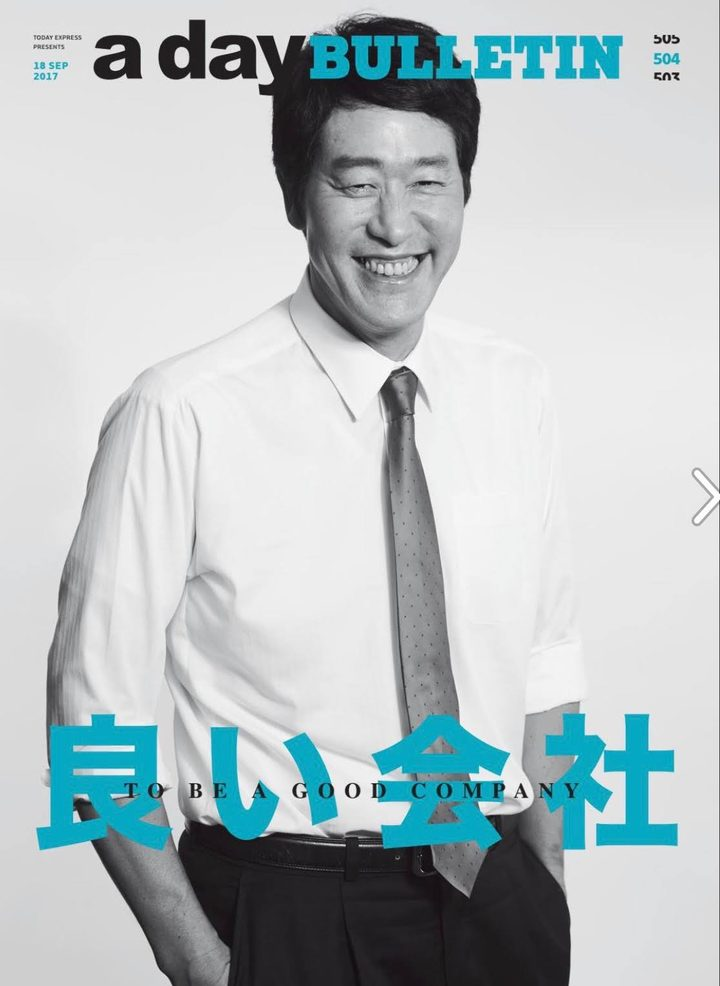
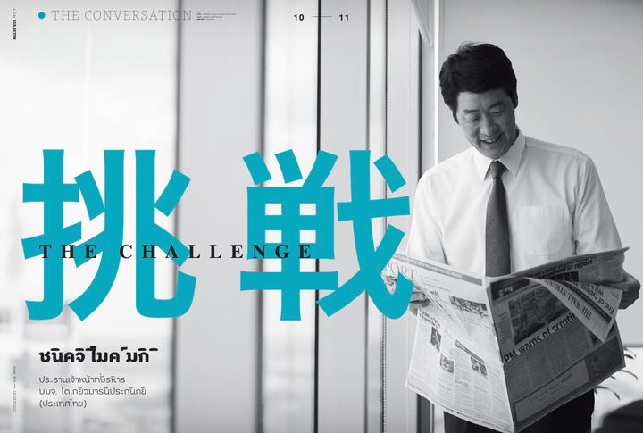
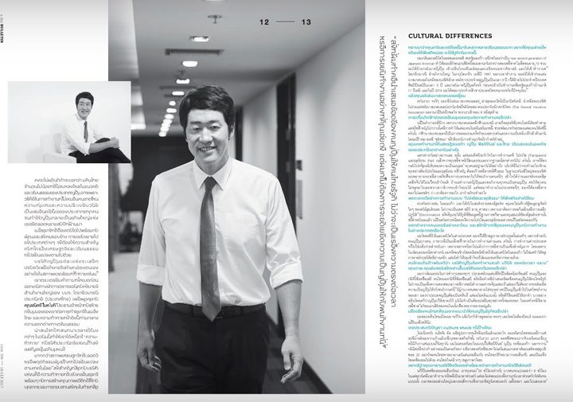
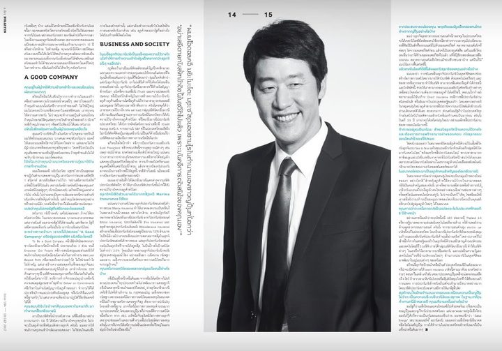

001IMG

a day BULLETIN 第504号 表紙「良い会社 / To Be a Good Company」
タイの週刊フリーマガジン a day BULLETIN 第504号（2017年9月18日発行）の表紙。東京海上日動火災保険（タイ）社長 三木晋吉（Shinkichi Mike Miki）を起用。
002IMG

特集扉「挑戦 / The Challenge」pp.10-11
特集インタビュー The Conversation の扉ページ。肩書は東京海上日動火災保険（タイ）社長 兼 CEO。
003IMG

本文「Cultural Differences 文化の違い」pp.12-13
日米タイの商習慣の違い、日系企業のタイ進出、タイ損害保険協会での活動などについて。
004IMG

本文「A Good Company / Business and Society」pp.14-15
「良い会社」の三本柱、CSR、マリン保険、AEC・Thailand 4.0 と保険業界の展望について。
該当する資料がありません。条件を変えてみてください。